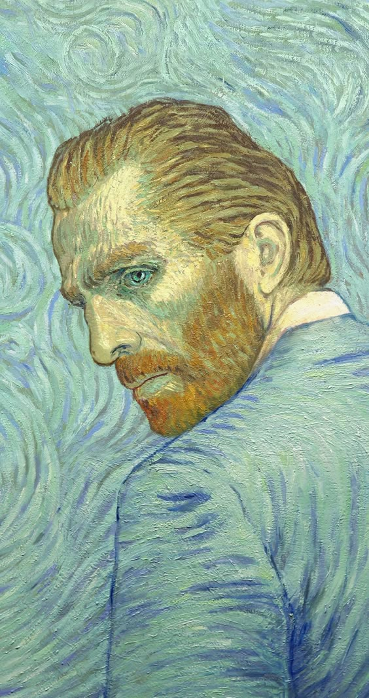

Biografía
Vincent van Gogh nació en Holanda en 1853. A los diciséis años empezó a trabajar en una galería de arte siendo su primer contacto con el mundo artístico aunque en los siguientes años de su vida se dedicó a la religión y practicar el evangelio hasta que en 1886 se muda a París en busca ponerse en contacto nuevamente con el arte y entabla amistades con artistas del impresionismo. Pero luego en 1888 se muda a Arlés en busca de un cambio a la ciudad y a la misma vez mejorar su salud mental, la cual ya se venía deteriorando desde hace tiempo. Es durante periodo es cuando tiene una discusión intensa con su amigo el artista Paul Gauguin la cual lo lleva a una crisis donde corta su propia oreja. Luego de este episodio aceptó nternarce en un psiquiatrico en Saint-Remy donde pinta su obra más famosa "La noche estrellada" la cual representa vista que tiene el desde la ventana de su cuarto, durante esos día predentaba una notable tristeza la cual para que reprenta con los azules tan oscuros e intensos de la pintura, mientras que las estrellas con las cuales estaba obsesionado (le dice a su hermano Theo a través de cartas) a mi parecer estan llenas de un amarillo muy brillante que representa esperanza entre tanta oscuridad. En 1889 le dan el alta y nuevamente en Arlés hace su autorretrato con la oreja vendada, el cual envía a su hermano ya que quería mostrarle que se encontraba mejor. En esta pintura vemos colores más claros y vivos como el amarillo y el verde, los cuales considero que representan una gran mejoría en su salud mental al menos en ese momento tal como él lo creía. A los días de su estadía fallece de un disparo, el cuál se debate hasta hoy en día se fue parte de un asesinato o un suicidio. si bien Van Gogh fue contemporaneo al movimiento impresionista débido a que su técnica se aleja del movimiento da inicio al postimpresionismo que tiene como eje plasmar en el lienzo lo que ve a través de los ojos tal como se persive en la realidad